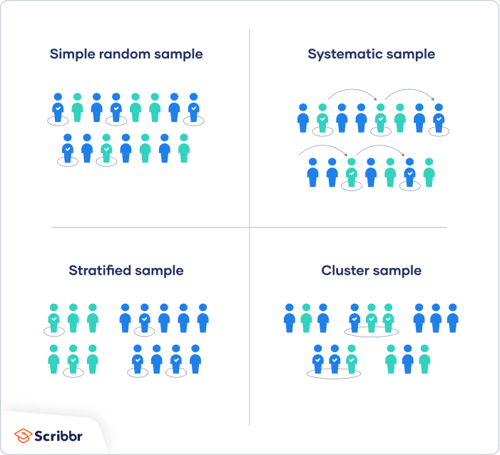
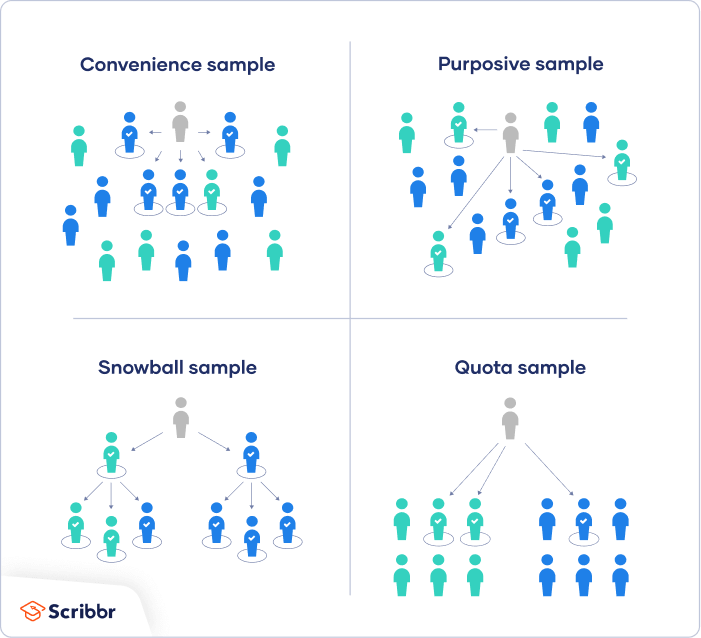

What do all these mean?? In most cases census research is not feasible because target populations are too large for researchers to attempt to survey everyone. In these instances, a small but carefully chosen sample should be used to represent the population. The sample must reflect the characteristics of the population from which it is drawn.
Sampling methods are classified as either probability or non-probability.
In probability sampling, each member of the population has a chance of being selected. Probability methods include random sampling, systematic sampling, cluster sampling, and stratified sampling.

In non-probability sampling, members are selected from the population in a planned or deliberate manner. Methods include convenience sampling, judgment sampling, quota sampling, and snowball sampling.

A few examples from each classification method are discussed on the following pages.(this link opens in a new window/tab)